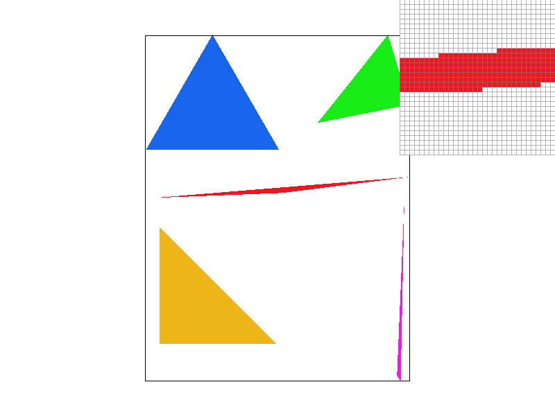
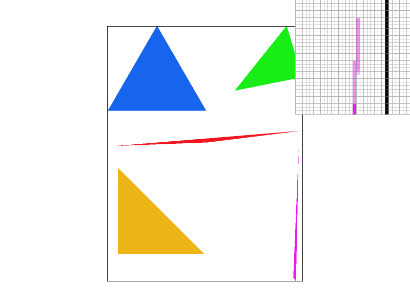
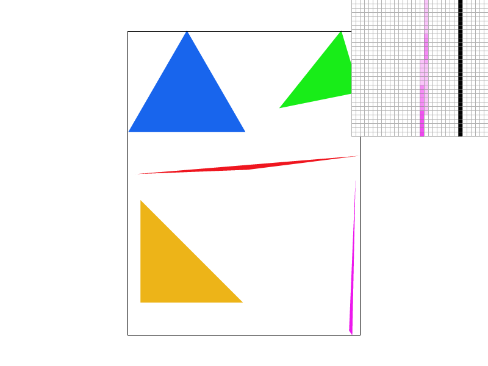
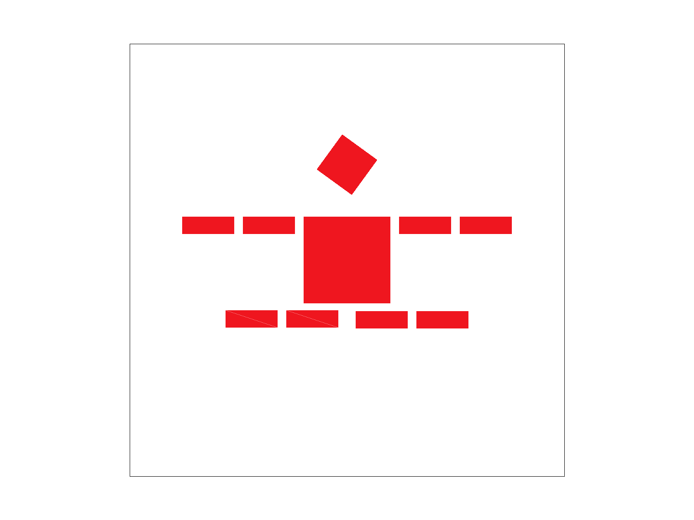
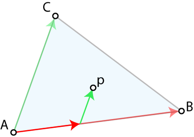
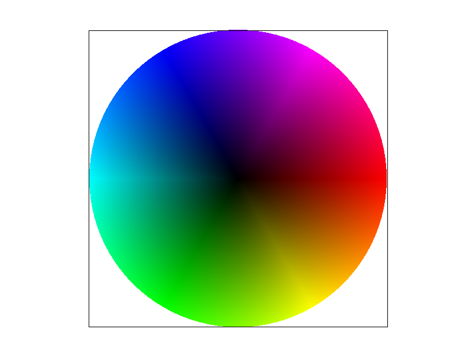
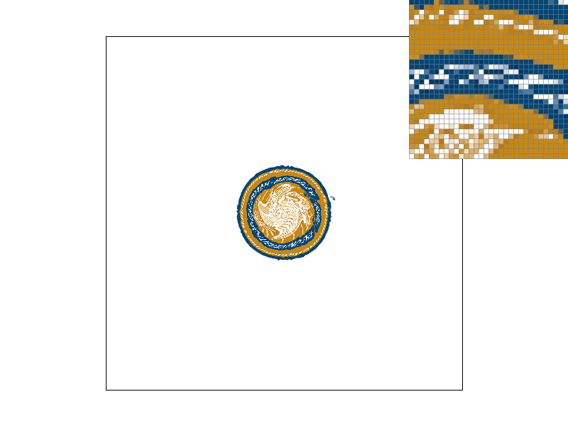
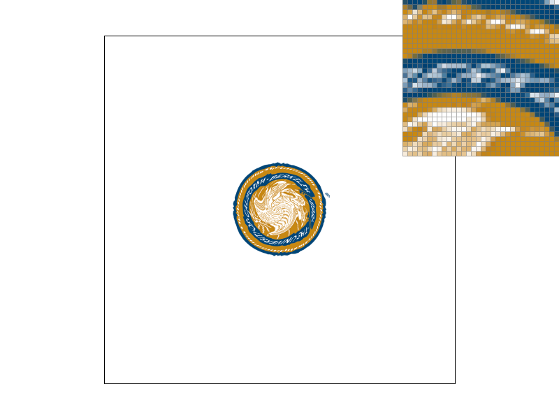

CS184/284A Fall 2026 Homework 1 Write-Up
Link to webpage: https://cal-cs184-student.github.io/hw1-nms-writeup/
Link to GitHub repository: https://github.com/cal-cs184-student/hw1-nms
Overview
(TODO) Give a high-level overview of what you implemented in this homework. Think about what you've built as a whole. Share your thoughts on what interesting things you've learned from completing the homework.Task 1: Drawing Single-Color Triangles
For this task, I implemented simple triangle rasterization given three vertices and a color for the triangle.
To make sure not to do too much extra work, I find the bounding box around the triangle using the most extreme x and y values of its vertices. I only check samples (pixels) within this bounding box. If that bounding box collapses to a line, then I call the pre-existing line rasterization function. Why re-invent the wheel?
I then check whether the winding order of the triangle's vertices is clockwise or counterclockwise. I
decided to use a ccw convention for this project, so if the winding order is wrong, then I swap the
order of two of the vertices to re-establish this invariant downstream of the rasterize_triangle
function call. This becomes useful when determining whether pixels which are on an edge should belong
to a triangle or not.
To actually rasterize the triangle, I loop over all points in the bounding box and check whether their centers are within the triangle. I know there are (much) more efficient ways to determine which pixels to check, but since premature optimization is the root of all evil, I leave this optimization to be completed when and/or if it's needed.
To check whether a sample is inside the triangle, I compute its barycentric coordinates, a frame which describes the sample point as a linear combination of the triangle vertices. Conveniently, if any of the barycentric coordinates of a point are less than zero, then it lies outside the triangle, and if they are equal to zero then they lie on one of its sides. Since floating point numbers don't have perfect precision, I use a small window of tolerance to determine whether a point is on the line. This lets us quickly determine whether the sample is outside, inside, or on a side of the triangle.
If the point is inside, we draw it. If it's outside, we don't. If it's on an edge, it gets more complicated. If we decide that every sample point which lies on the edge of a triangle belongs to that triangle, then in the case where two triangles share a side, we don't know what to do with samples on that side. Thus, OpenGL's convention is to associate samples which lie on the 'left' or 'top' edges of a triangle with that polygon. A top edge is one which is horizontal and above all other lines. A left edge is a little harder to describe, but can be defined as an edge which "descends" as we follow it in the ccw direction. This is why I ensured all triangles which reach this point have ccw winding order.

Task 2: Antialiasing by Supersampling
In this task, I implemented image supersampling, an anti-aliasing technique whereby we sample the image more finely than once per pixel to help alleviate the jagged edges and aliasing artifacts present when high frequency data is undersampled. See the diagram below for a comparison between supersampling levels. Supersampling is the most computationally expensive but realistically data-based approach to anti-aliasing. It requires multiplying your computations by a preset sample_rate factor in order to find more detail in your image, but it does mean that the anti-aliasing you perform is based on the underlying image data and not an approximation. This means it would be a great method for pre-rendered scenes like product catalogues, films, or scientific simulations, but it wouldn't be a great choice for a real-time application like a game or interactive animation. Unfortunately, to reduce the aliasing in each direction by a given amount, you have to do that many squared more computations. This gives \(O(n^2)\) scaling for linear benefit, meaning incremental improvements in aliasing require more and more computation.
For my implementation of supersampling, I treated each pixel as its own 1x1 image, where I determined the color that image should be by sampling the underlying image, represented mathematically by triangles in the example below, multiple times. In my implementation, I use a square subgrid. The options given in the program are 1x, 4x, 9x, and 16x supersampling, where 1x means no supersampling, although my implementation would work for arbitrarily high supersampling given the upsample rate was square. Thus, at a new sampling rate \(s\), I sampled each pixel on an \( \sqrt{s} \times \sqrt{s} \) grid, centered around the center point of the pixel. So for 1x supersampling, my grid is just a single point at the center of the pixel \( (px + 0.5, py + 0.5) \), identical to no supersampling. For 4x supersampling, I sample each pixel on a 2x2 grid where the coordinate locations are \( (px + 0.25 + nx \times 0.5, py + 0.25 + ny \times 0.5) \) for subgrid indices \((nx, ny) \in \{0, 1\} \). For better anti-aliasing, one could have convolved this supersampled grid with a good sampling function to determine the correct value at each pixel, but I took the simple route and averaged the pixel values, essentially implementing convolution of a \(\sqrt{s} \times \sqrt{s}\) size box kernel with even \(\frac{1}{s}\) weightings and a stride size \(\sqrt{s}\).
To represent this data, I enlarged the sample_buffer by a factor of the sample rate, since I now needed to store \(s\) samples per pixel instead of
just one. Whereas before I had thought of the buffer as a \(width \times height\) array, flattened into a 1 dimensional array, I now structured the buffer
as a \(\sqrt{s} \cdot width \times \sqrt{s} \cdot height \) matrix flattened into a 1D array. The top \(\sqrt{s} \times \sqrt{s}\) values then represented
the \(s\) samples taken from the first pixel's \(\sqrt{s} \times \sqrt{s}\) subgrid array. To fill the \(width \times height\) framebuffer, I performed the
averaging (box convolution) described above, putting the average color value of the sub-samples of each pixel into that pixel's location in the framebuffer.
To make sure rendering pixels and lines gave the same behavior as before, I had their rendering function, fill_pixel fill the
entire \(\sqrt{s} \times \sqrt{s}\) subgrid for the pixel they were sampling so that the average value in that pixel stays the same and it
renders identically. This illuminates the meaning of the pre-written function name fill_pixel.
test4.svg with no (1x) supersampling zoomed into a skinny aliased region of the pink triangle.
|
 test4.svg with 4x supersampling zoomed into a skinny aliased region of the pink triangle.
|
 test4.svg with 16x supersampling zoomed into the skinny aliased region of the pink triangle.
|
| In this region, the area covered by the triangle overlaps no sampled points at the center of pixels, so it isn't rendered. | With supersampling, we can see that the area covered by the triangle overlaps at least one of the 2x2 sampled points per pixel, making sure there is no gap between pixels on the screen representing the triangle. Note how the triangles on the image look slightly blurrier as we represent the image in a way that matches our sampling more closely, not artificially showing high frequency information where we haven't sampled it. | With more supersampling, we can see the effect magnified as we're sampling 4x4 subpixels per pixel, giving more information for how to draw the triangle. Interestingly, at this magnification another aliasing effect or Moire pattern shows up as there's a periodic structure in intensity showing on the triangle's surface as the actual triangle covers more or fewer subpixels in each pixel depending on its relative phase. |
Task 3: Transforms
In this task, we implemented transformations via matrices to enable rendering scenes generated hierarchically, where a tree of transformations defines different related parts of an object. The example (shown below) is a robot which has arms, legs, a torso, and a head which are each defined relative to a central object position and rotation. The head, for example, is first translated above the central body, then rotated. For this task, we also had to modify the robot to perform some action by editing the text inside the SVG file. Here, I have created a jumping robot, which acrobatically leaps into the air.

robot.svg
|
 my_robot.svg showing a 'jumping' action
|
Task 4: Barycentric coordinates
In this task, we implemented color gradients across triangles using barycentric coordinates. Barycentric coordinates tell you the position of a point within a triangle, just like cartesian coordinates. The difference is that barycentric coordinates describe the point as a linear combination of the triangle's vertices. This lets you associate the point easily with nearby vertices, allowing for smooth interpolation of quantities associated with each vertex like, say, color.

Using this technique, it's possible to render color wheels like this one below.
test7.svg showing how interpolating colors using barycentric coordinates can be used to draw
gradients like this color wheel.
Task 5: "Pixel sampling" for texture mapping
Pixel sampling is the problem of determining what color we should assign to each screen pixel. If we have an image which is the same size as the screen, then displaying that image or a portion of it (without magnification) is relatively straightforward. But how do you assign a color if we have to resample the image (or geometry) at a spacing other than what was originally provided? That's the problem of pixel sampling. Here, I implemented two different kinds of pixel sampling: nearest and bilinear.
Nearest is exactly what it sounds like. If we're trying to sample at a location p, then we choose the value of the known sample closest to p. For a grid of samples, this creates rectangular regions where the sample will be the same, a piecewise-continuous function, leading to 'pixelated' looking images if they're magnified and aliasing if they're minified since a single jump in screen pixel space might jump over several image (texture) samples.
Bilinear is slightly more complicated and essentially involves interpolating between the four closest samples to p. If we assume points and lines are infinitesimally small and narrow (not a perfect assumption with the limited precision offered by computers but good enough), then p has a 100% chance of ending up inside the square formed by four other samples (unless it's outside the sampled region). Bilinear sampling uses information from all four of the corners of that square, scaling the contribution by how near p is to that corner. This creates a smooth interpolation between samples.
Below, I've shown an example of the difference between nearest and bilinear texture sampling, as well as supersampling which is the more computationally expensive but high quality way to do pixel sampling. Using nearest interpolation with 1x supersampling, it's very difficult to read the stretched and warped words on the logo, but with bilinear sampling and/or 16x supersampling the words become readable. The top bar of the E becomes clearer and the top curve of the R softens to indicate its roundedness.
|
 |
 |
|
|
|